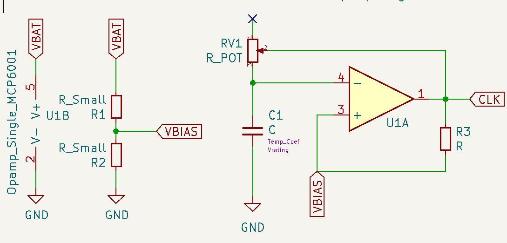
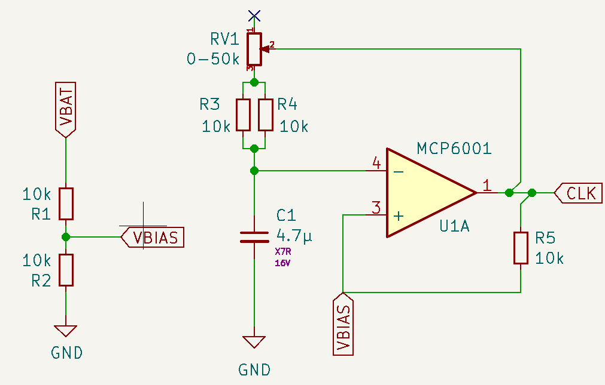
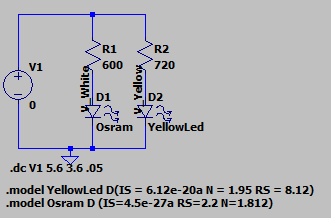

Snowflake - Design Justification#
What does it do?#
This Christmas decoration has an LED in the centre and two rings of six LEDs. The idea is to blink them, following the pattern centre - inner ring - outer ring - pause.
some inline \(add_{math}\)
LED sequence#
To alternate between LEDs, we use a decade counter. The HC4017 is a Johnson counter with 10 decoded outputs. Only one output is high at a time, and the each output is sequentially selected on the low-to-high edge of the clock signal.

In order to cycle through the different elements, the central LED (LED0) is connected to output 1, the inner ring is connected to output 2 and the outer ring is connected to output 3. Output 0 is left unconnected to provide a pause between cycles (and also reduce a bit the average battery draw). Output 4 is connected to the reset pin, so as soon as it gets active, the counter resets and the cycle starts again.
Clock Generation#
To generate the clock signal, we use an Op Amp in astable vibrator configuration. It’s made by two elements, a Schmitt trigger and an RC circuit connected to the inverting pin of the opamp. Because we are using a single rail to power the op amp, we have to bias the non-inverting pin.
Schmitt Trigger#
The Schmitt trigger is formed by the opamp U1A and R3 as feedback resistor and R1 and R2 used as voltage divider to set the bias point. The opamp is powered by the battery directly and V- is connected to GND. As the voltage of the battery will drop, I decided not to use a voltage reference for the bias, because as VDD drops, the ratio between VDD and Vbias would change. The voltage divider affects the Schmitt trigger, by changing the value of the threshold levels, but we need hysteresis anyway.
The analysis is pretty simple. If Vout (labelled CLK) is high, the equivalent circuit is

Doing some basic Kirchoff…
Similarly, when the output is low

If \(R1 = R2\), \(Vbias = VDD/2\) . It’s easy to see how in that case, when the output is low, the feedback resistor pushes the threshold voltage (Vbias) up from whatever the R1 - R2 voltage divider would set by appearing in parallel to R1 (thus, decreasing its value and typing the balance towards R2). In the same way, when the output is high, by appearing in parallel to R2, it lowers Vbias.
The following code shows an interactive plot that allows changing the values of R1, R2 and R3 and see how they impact the threshold levels.
""" Schmitt Trigger interactive plot
"""
%matplotlib widget
from ipywidgets.widgets import IntSlider, FloatSlider, Textarea
from ipywidgets import interact
from math import ceil, exp
from matplotlib.lines import Line2D
from matplotlib.pyplot import figure
from numpy import float64, linspace, pi, sign, sin, array, greater
from numpy.typing import NDArray
from scipy import signal
from scipy.signal import argrelextrema
from typing import Sequence
def ThresholdCalculator(Vdd:float, R1: int, R2: int, Rf: int)-> tuple[float, float]:
""" Calculates the threshold voltage on a Schmitt trigger (single rail,
biased with a voltage divider, ideal rail to rail opamp)
Parameters:
-----------
VoutH: float
The value of VoutH when the opamp is saturated high
VoutL: float
The value of VoutH when the opamp is saturated low
Vdd: floag
the power supply voltage
R1: int
top resistor of the voltage divider
R2: int
bottom resistor of the voltage divider
Rf: int
feedback resistor
Return
------
VthL: float
the threshold value when the output is LOW
VthH: float
the thershokd value when the output is HIGH
"""
parallelR1Rf:float= (R1 * Rf) / (R1 + Rf)
parallelR2Rf:float= (R2 * Rf) / (R2 + Rf)
ratioH:float = (parallelR1Rf / R2) + 1
ratioL:float = (R1 / parallelR2Rf) + 1
VthH:float = Vdd / ratioH
VthL:float = Vdd / ratioL
return VthL, VthH
def ThresholdSignal(Vout: Line2D, VthL: float, VthH:float, Vdd: float)-> Sequence[float]:
""" Calculates the threshold voltage signanl on a Schmitt trigger (single rail,
biased with a voltage divider)
Parameters:
-----------
Vout: float
a line 2D with the values of the output signal of the opAmp, as
they determine the threshold value
VthL: float
the threshold value when the output is LOW
VthH: float
the thershokd value when the output is HIGH
Vdd: int
the power supply voltage
Return
------
returnArray: Sequence[float]
a sequence with the values of the Schmitt Trigger thresholds, depending
on the values of the resistor network, Vdd and the current output of
the OpAmp
"""
returnArray:Sequence[float] = []
# extrac data from Vout (line2D) to array
voltages:Sequence[float] = Vout.get_ydata()
for i in range(len(voltages)):
if voltages[i] > (Vdd / 2):
returnArray.append(VthH)
else:
returnArray.append(VthL)
return returnArray
def capacitor_voltage(t:float, R: int, C: float, Vapplied:float)->float:
""" Calculates the voltage of a capacitor (Vout) in an RC filter after
time = t seconds, when Vapplied volts are applied at the input
Parameters:
-----------
t: float
time elapsed in seconds since Vapplied was applied at the input of
the RC filter
R: int
The value of the resistor (in Ω) of the RC filter
C: float
The value of the capacitor (in Farads) of the RC filter
Vapplied: float
The voltage (in Volts) applied at the input
Retunr
--------
cap_Volt: float
The voltage in the capacitor in Volts (Vout of the RC filter)
"""
cap_volt = Vapplied * (1 - exp (-t/(R*C)))
return cap_volt
def astable_vibrator_signals(times:NDArray[float64], Rd1:int, Rd2:int, Rf:int, Rc:int, C:float, Vdd:float)->tuple[Sequence[float], Sequence[float], Sequence[float]]:
""" Calculates the values of the signals of interest on an Astable Multivibrator: the
voltages at the inverting and non inverting pins and the output signal. The amplifier
is ideal, powered with a single rail and biased with a voltage divider.
The calculations are based on the values of the feedback resistor Rf, the values of the
resistors on the voltage divider and the values of the RC filter in the non-inverting pin
as well as the Vdd voltage.
Parameters:
-----------
times: NDArray[float64]
A sequence of values for the time at wich the values of the signals has to be calculated
Rd1:int
The value of the voltage divider resistor connected to VDD
Rd2:int
The value of the voltage divider resistor connected to GND
Rf:int
The value of the feedback resistor connected from out to v+.
Rc: int
The value of the resistor (in Ω) connected to the RC filter
C: float
The value of the capacitor (in Farads) in the RC filter
Vdd: float
the voltage applied to the capacitor. It's constant for all the values in times
Return
------
[vi_signal, vo_signal, vf_signal]: tuple[Sequence[float],Sequence[float],Sequence[float]
Sequences with the values of voltage at the inverting, output and non-inverting
pins of the OpAmp, respectively.
"""
vi_signal:Sequence[float] = [0.0] * len(times)
vo_signal:Sequence[float] = [0.0] * len(times)
vf_signal:Sequence[float] = [0.0] * len(times)
# Get the schimtt trigger thresholds for this config
thresholdl, thresholdh = ThresholdCalculator(Vdd, Rd1, Rd2, Rf)
#initial conditions
vi_signal[0] = 0 # capacitor starts discharged
# vi below threshold, so vo is HIGH
vo_signal[0] = Vdd
# vo is HIGH so Vthreshold is VthH
vf_signal[0] = thresholdh
start_t = times[0]
start_v = 0
rising = False # an aux variable to keep track if we are charging or discharging C
if vi_signal[0] < vf_signal[0]:
rising = True
for i in range(1, len(times)): #skip times[0] as we have entered the initial conditions by hand
if vi_signal[i - 1] < vf_signal[i-1]:
# If v- < v+, the voltage at the cap is below trheshold
# We will charge the capacitor
time = times[i]
vi_signal[i] = capacitor_voltage(time-start_t, Rc, C, Vdd - start_v) + start_v
vf_signal[i] = thresholdh
vo_signal[i] = Vdd
else: # vi_signal[i - 1] >= vf_signal[i-1]:
# Else, the voltage at the cap is above the trheshold
# We will discharge the capacitor
time = times[i]
vi_signal[i] = capacitor_voltage(time-start_t, Rc, C, 0 - start_v) + start_v
vf_signal[i] = thresholdl
vo_signal[i] = 0
# after updating the values, check if we switched the thresholds
if (vi_signal[i] >= vf_signal[i]) and rising:
start_v = thresholdh
start_t = times[i]
rising = False
elif (vi_signal[i] <= vf_signal[i]) and not rising:
start_v = thresholdl
start_t = times[i]
rising = True
return vi_signal, vo_signal, vf_signal
# Resistor Values and VDD
R_1 = 10000
R_2 = 10000
R_3 = 10000
Vdd = 3
# x axis is 0 to 4s, 100 values
x = linspace(0, 4, 100)
fig = figure()
ax = fig.add_subplot(1, 1, 1)
# Generate a square signal, simulating the switching output of the opamp, .5Hz
out_signal, = ax.plot(x, 3/2 * (signal.square(2 * pi * 1/2 * x) + 1))
# Calculate the threshold values for the resistor network and the output signal
thresholdl, thresholdh = ThresholdCalculator(Vdd, R_1, R_2, R_3)
threshold_signal, = ax.plot(x, ThresholdSignal(out_signal, thresholdl, thresholdh, Vdd))
def update(R1:int=1, R2:int=1, R3:int=1):
thresholdl, thresholdh = ThresholdCalculator(Vdd, R1, R2, R3)
print(f"Threshold low is {thresholdl:.2f}V and threshold high is {thresholdh:.2f}V. Ratio is {100 * (thresholdh - thresholdl) / Vdd:.0f}% of VDD")
threshold_signal.set_ydata(ThresholdSignal(out_signal, thresholdl, thresholdh, Vdd))
fig.canvas.draw_idle()
# Create a wiget for
R1 = IntSlider(value=10000, min=1000, max=50000, step=1000, description='R1 (Ω):',
orientation='horizontal', readout=True, readout_format='.2d')
R2 = IntSlider(value=10000, min=1000, max=50000, step=1000, description='R2 (Ω):',
orientation='horizontal', readout=True, readout_format='.2d')
Rf = IntSlider(value=10000, min=1000, max=50000, step=1000, description='Rf (Ω):',
orientation='horizontal', readout=True, readout_format='.2d')
thresholdL = Textarea(
value='"0"',
placeholder='"0"',
description='String:',
)
interact(update, R1=R1, R2=R2, R3=Rf);
---------------------------------------------------------------------------
TypeError Traceback (most recent call last)
Cell In[1], line 15
12 from scipy.signal import argrelextrema
13 from typing import Sequence
---> 15 def ThresholdCalculator(Vdd:float, R1: int, R2: int, Rf: int)-> tuple[float, float]:
16 """ Calculates the threshold voltage on a Schmitt trigger (single rail,
17 biased with a voltage divider, ideal rail to rail opamp)
18 Parameters:
(...)
37 the thershokd value when the output is HIGH
38 """
39 parallelR1Rf:float= (R1 * Rf) / (R1 + Rf)
TypeError: 'type' object is not subscriptable
From this experiment, R1 = R2 = R3 seem like a good compromise. The threshold levels for Vdd = 3V are 1V and 2V. The hysteresis is 1V, 33% of the VDD value. And this will simplify construction and the BOM, as we will need less resistor values.
Astable Multivibrator#
To complete the astable vibrator circuit, we need an oscillating input. We will use the output of the opamp to charge and discharge an RC filter, and connect the capacitor to the inverting input of the opamp. Because the input is not stable in any state, the output will keep oscillating, which in turn will keep the input oscillating… you get the drill.
At the start, the capacitor is discharged, so the inverting input is at 0. The non-inverting input is biased at VDD/2, so the output of the opamp is high, and the voltage at the non-inverting input is set to VthresholdH through the feedback resistor. The output of the opamp starts charging the capacitor
Eventually, \(V_{cap} \gt V_{thresholdH}\), so the output of the opamp will go low, the voltage in \(V_{+}\) will be set at \(V_{thresholdL}\) and the capacitor wills start to discharge through \(R\), until \(V_{cap} \le V_{thresholdL}\) and the cicle starts again.
The first rise to \(V_{thresholdH}\) will take longer, because the cap has to charge from 0V to \(V_{thresholdH}\), but after that, the output of the opamp will be a square wave with a 50% duty cycle.
The next code will generate an interactive plot allowing changing the values for all the passives in the circuit.
""" Astable Multivibrator Graphs
Putting it all together, shows an interactive plot where we can see the impact of the different
variables of the circuit have on the output.
"""
Rd1:int = 10000
Rd2:int = 10000
Rf:int = 10000
Rcap:int = 100000
cap:float = 0.00001
Vdd:float = 3
start_t = 0
stop_t = 10
delta_t = .01
times = linspace(start_t, stop_t, ceil((stop_t - start_t) / delta_t))
# Prepare the plot
fig = figure()
ax = fig.add_subplot(1, 1, 1)
# Generate the three signals to print
vi_values, vo_values, vf_values = astable_vibrator_signals(times, Rd1, Rd2, Rf, Rcap, cap, Vdd)
vf_signal, = ax.plot(times, vf_values)
vi_signal, = ax.plot(times, vi_values)
vo_signal, = ax.plot(times, vo_values)
def update(Rd1:int, Rd2:int, Rf:int, Rcap:int, cap:float, Vdd:int):
# update the signal
vi_upd_values, vo_upd_values, vf_upd_values = astable_vibrator_signals(times, Rd1, Rd2, Rf, Rcap, cap/100000, Vdd)
vf_signal.set_ydata(vf_upd_values)
vo_signal.set_ydata(vo_upd_values)
vi_signal.set_ydata(vi_upd_values)
# Print the freq/period of the resulting output signal
# get the indices of the local maxima of vi
vi_local_maxes=(argrelextrema(array(vi_upd_values), greater, mode='wrap'))[0]
# the period is the time different between the first two
clk_period = times[vi_local_maxes[1]] - times[vi_local_maxes[0]]
print(f"Clk Freq is {1/clk_period:.2f}Hz / Period {clk_period:.2f}s")
fig.canvas.draw_idle()
# Create a widgets for variables that will be modifiable
Rd1_slider = IntSlider(value=10000, min=1000, max=500000, step=1000, description='Rd1 (Ω):',
orientation='horizontal', readout=True, readout_format='d')
Rd2_slider = IntSlider(value=10000, min=1000, max=500000, step=1000, description='Rd2 (Ω):',
orientation='horizontal', readout=True, readout_format='d')
Rf_slider = IntSlider(value=10000, min=1000, max=500000, step=1000, description='Rf (Ω):',
orientation='horizontal', readout=True, readout_format='d')
Rcap_slider = IntSlider(value=10000, min=5000, max=50000, step=5000, description='Rcap (Ω):',
orientation='horizontal', readout=True, readout_format='d')
cap_slider = FloatSlider(value=10, min=.01, max=100, step=.01, description='C (μF):',
orientation='horizontal', readout=True, readout_format='.3f')
Vdd_slider = FloatSlider(value=3, min=0, max=5, step=.1, description='Vdd (V):',
orientation='horizontal', readout=True, readout_format='.2f')
interact(update, Rd1=Rd1_slider, Rd2=Rd2_slider, Rf= Rf_slider, Rcap=Rcap_slider, cap=cap_slider, Vdd=Vdd_slider);
Astable multivibrator Passive Components Values#
I like the idea of not having lots of different resistors on my circuit. The Schmitt trigger is balanced if \(R_1 = R_2 = R_f\), so we’ll select your ubiquitous 10kΩ resistor for them.
For the RC filter, I think the right rate of blinking should be around 1s, but not everyone might agree so let’s use a variable resistor in the RC. With a 4.7μF cap we get a period of 1s with ~15kΩ. Using a 50kΩ pot you could slow it down up to T=3.2s. Because the minimum resistance of a pot is quite low (tens of Ω), we can add a series resistor that works as a lower limit. 10kΩ would be a bit too much (as that would set the minimum period on .6s), but I don’t want to add another resistor value and because smd resistors are practically free, I’ll trade some space and put two 10ks in parallel to get the minimum resistance to 5kΩ that would result in minimum period of T=.35s
Powering it up#
The first limitation I found is around power. I wanted to use a AAA coin cell to power them, because they store quite an amount of energy (a typical AAA stores 800-1200 mAh, 750mAh if rechargeable (Duracell)) but we would need two to get 3V (when full) and a holder simply doesn’t fit in the back and it would be quite bulky…


So I guess that leaves us with coin cells. They use a different chemistry, so they provide higher voltages, so we can power the whole thing with one instead of two (that’s good!), but they are smaller, so they have less net capacity (that’s bad!). On a good day, a CR2032 has ~250mA and that’s when you barely draw any current (see the graph below). As they get discharged, voltage quickly drops (see graph below) which might be a problem with white LEDs.

Using one cell definitely looks better than using triple As, you can’t see the battery.
Another option would be using two cells in series. That wouldn’t “double” the battery life, as the current draw would be the same, but the higher VDD voltage could help to bias a white LED for longer: a single, partially-depleted cell providing 2.2V wouldn’t bias a white LED, but two really-depleted cells providing 1.8V each would still give you 3.6V to comfortably bias the LED. Two cells don’t look bad either, but it might be too heavy/chunky.

{kind=link}
{kind=link}
{kind=link}
{kind=link}
NordicRF published a paper that proved that pulsed current demand also helped to provide more energy. The time scales mentioned in the paper are very small for our use case (we don’t want to blink in the 10s of ms range) but the planned paused between cycles might give the battery a break and improve battery life.
Choosing an LED#
My first idea was to use white LEDs. They have a relatively high Vf (typically around 3.2V although there are some out there with 2.7V) as they are blue or UV LEDs covered with a phosphor layer. These Vfs are at relatively high currents (20-60mA or even more…), where the LED is the most efficient and designed to operate. Luckily for us, we want to work at a lower bias point because we want to run them at the lowest current possible because 1) we are running on a coin cell and 2) we don’t want to light up the entire room.
I’ll consider using a coloured LED, as they have smaller Vfs allowing using a small bias resistor, and a white LED, which might require 2 batteries and a bigger bias resistor (so more power lost on the resistor) if their bias point is close to 3V.
About the bias point, because we have two rings of 6 LEDs, the maximum draw will be ~6 * Iled. Let’s aim for a current of 5mA, which would leave us with a maximum draw of 30mA.
Yellow LED#
This is the curve of a cheap-and-cheerful 20mA@2.2V Yellow LED (link to datasheet). The rated luminosity is 100mcd typ, 63mcd min at 20mA.
{kind=link}
{kind=link}
At 5mA, the voltage drop in the LED is ~2V.
White LED#
I found these Osram white LEDs, which are from a reputable brand and are surprisingly cheap for a white LED. They also operate at 20mA@3.2V, although they are on the coldish side of white, with a temperature of 4K (link to datasheet - TOPLED E3014 KW DCLMS2.EC). It’s rated 2800mcd min / 4500 mcd max!! That’s 40x brighter.


At 5mA, the voltage drop in the LED is ~2.6V. These LEDs are really efficient, and even at 5mA, they are really bright!
Limiting Resistor Calculations#
This code will calculate the value of the limiting resistors for the LEDs, based on the voltage supplied by the batteries, number of batteries
A coin cell (CR2032) has this typical discharge rates, were voltage almost instantly drops to 2.8V and provides voltage until 1.8-2V
from math import ceil
class LED:
def __init__(self, name:str, Vbias:float, Ibias:float):
self.name = name
self.Vbias = Vbias
self.Ibias = Ibias
class Battery:
def __init__(self, maxCellVoltage:float, minCellVoltage:float, numCells:int):
self.maxCellVoltage = maxCellVoltage
self.minCellVoltage = minCellVoltage
self.numCells = numCells
def maxBattVoltage(self)->float:
aux = (self.numCells * self.maxCellVoltage)
return aux
def minCellVoltage(self)->float:
return (self.numCells * self.minCellVoltage)
def findLimiterResistorValue(LEDObj:LED, battery: Battery):
'''Prints the value of the limiting resistor needed in series with the LED with the
Bias point defined in LEDObj, and some stats
Parameters:
-----------
LEDObj: LED
An instance of the LED class, containing the target bias point.
battVoltage: float
The value of the battery voltage connected to the R-LED circuit
'''
resistorVoltDropMax = battery.maxBattVoltage() - LEDObj.Vbias
resistorValueMin = ceil(resistorVoltDropMax / LEDObj.Ibias)
print(f"{LEDObj.name} - {battery.numCells} Cells")
print(f"Resistor value for {LEDObj.Ibias * 1000}mA LED bias current with fresh cells is {resistorValueMin}Ω and will drop {resistorVoltDropMax:.2f}V")
print (f"Power use by LED is {LEDObj.Ibias * LEDObj.Vbias * 1000:.2f}mW and Power wasted in R is {LEDObj.Ibias * resistorVoltDropMax * 1000:0.2f}mW")
# White OSRAM LEDs, 20mA@2.7V, 5mA@2.6V, almost the same at 4mA
whiteLED5mA = LED("OSRAM White LED", 2.6, 0.005)
whiteLED4mA = LED("OSRAM White LED", 2.59, 0.004)
# Generic 0603 Yellow LED, bias is 20mA@2.2V, 5mA@2V
yellowLED5mA = LED("Generic Yellow LED", 2, 0.005)
# Single CR2032, starts at ~2.8V and stops at ~1.8V
singleCell = Battery(2.8, 1.8, 1)
# Double CR2032 in series, same current, double the voltage
doubleCell = Battery(2.8, 1.8, 2)
# Print the values of the limiting resistors needed for the white and yellow LEDs with one and two CR2032 cells
findLimiterResistorValue(whiteLED5mA, singleCell)
print("==============")
findLimiterResistorValue(whiteLED5mA, doubleCell)
print("==============")
findLimiterResistorValue(yellowLED5mA, singleCell)
print("==============")
findLimiterResistorValue(yellowLED5mA, doubleCell)
# The White LED was quite bright at 5mA, what would be needed to get it driven at 4mA?
print("==============")
findLimiterResistorValue(whiteLED4mA, singleCell)
print("==============")
findLimiterResistorValue(whiteLED4mA, doubleCell)
OSRAM White LED - 1 Cells
Resistor value for 5.0mA LED bias current with fresh cells is 40Ω and will drop 0.20V
Power use by LED is 13.00mW and Power wasted in R is 1.00mW
==============
OSRAM White LED - 2 Cells
Resistor value for 5.0mA LED bias current with fresh cells is 600Ω and will drop 3.00V
Power use by LED is 13.00mW and Power wasted in R is 15.00mW
==============
Generic Yellow LED - 1 Cells
Resistor value for 5.0mA LED bias current with fresh cells is 160Ω and will drop 0.80V
Power use by LED is 10.00mW and Power wasted in R is 4.00mW
==============
Generic Yellow LED - 2 Cells
Resistor value for 5.0mA LED bias current with fresh cells is 720Ω and will drop 3.60V
Power use by LED is 10.00mW and Power wasted in R is 18.00mW
==============
OSRAM White LED - 1 Cells
Resistor value for 4.0mA LED bias current with fresh cells is 53Ω and will drop 0.21V
Power use by LED is 10.36mW and Power wasted in R is 0.84mW
==============
OSRAM White LED - 2 Cells
Resistor value for 4.0mA LED bias current with fresh cells is 753Ω and will drop 3.01V
Power use by LED is 10.36mW and Power wasted in R is 12.04mW
LTSPICE Simulation#
One Coin Cell#
To see the bias point as the battery drops voltage, we will need to run simulations on LTSpice.
I found this link about how to model LEDs on LTSpice in electronics stackexchange: Modelling an LED
The circuit is as follows
{kind=link}
import ltspice
from matplotlib.collections import LineCollection
# Get spice simulation data
filepath = 'LTSpice/LED And Battery Sims 1 Cell.raw'
l = ltspice.Ltspice(filepath)
l.parse() # Data loading sequence. It may take few minutes for huge file.
# Get data from simulation
voltages = l.get_time() # the x axis in the simulation is Voltages, not time
Vwhite = l.get_data('I(D1)')
Vyellow = l.get_data('I(D2)')
fig_spice = figure()
ax_spice = fig_spice.add_subplot(1, 1, 1)
# Plot the two diode curves
whiteLED = ax_spice.plot(voltages, Vwhite * 1000, label="White LED RS=40Ω")
yellowLED = ax_spice.plot(voltages, Vyellow * 1000, label="Yellow LED RS=160Ω")
# plot a dashed lines at the points the light should go off, more or less
ax_spice.axhline(y=1.4, c="blue",linewidth=1,zorder=0, linestyle="dashed")
ax_spice.axhline(y=1, c="orange",linewidth=1,zorder=0, linestyle="dashed")
ax_spice.axvline(x=2.55, c="blue",linewidth=1,zorder=0, linestyle="dashed")
ax_spice.axvline(x=2.05, c="orange",linewidth=1,zorder=0, linestyle="dashed")
#Invert the axis, as it's easier to read "as the battery gets depleted"
ax_spice.invert_xaxis()
ax_spice.set_ylabel("If (mA)")
ax_spice.set_xlabel("Vbatt (V)")
ax_spice.set_title("If/Vbat with 1 Coin Cell")
ax_spice.legend()
C:\Users\joel.santos\AppData\Local\Temp\ipykernel_7084\4211692061.py:13: RuntimeWarning: More than 20 figures have been opened. Figures created through the pyplot interface (`matplotlib.pyplot.figure`) are retained until explicitly closed and may consume too much memory. (To control this warning, see the rcParam `figure.max_open_warning`). Consider using `matplotlib.pyplot.close()`.
fig_spice = figure()
<matplotlib.legend.Legend at 0x1be4bf277d0>
In the case of one coin cell, the current would drop below 1mA at @2V in the case of the yellow diode and current is around 2mA@2.55V in the case of the white (the model is not spot on). That means that the white LED is not going to stay lit for long with one cell… (but check the results for an interesting plot twist!).
Two Coin Cells#
For the two coin cells, I will use the same circuit, but I will sweep the voltage from 1.8 * 2 to 2.8 * 2.
# Get spice simulation data
filepath = 'LTSpice/LED And Battery Sims - Two Cells.raw'
l = ltspice.Ltspice(filepath)
l.parse() # Data loading sequence. It may take few minutes for huge file.
# Get data from simulation
voltages = l.get_time() # the x axis in the simulation is Voltages, not time
Vwhite = l.get_data('I(D1)')
Vyellow = l.get_data('I(D2)')
fig_spice = figure()
ax_spice = fig_spice.add_subplot(1, 1, 1)
# Plot the two diode curves
whiteLED = ax_spice.plot(voltages, Vwhite * 1000, label="White LED RS=40Ω")
yellowLED = ax_spice.plot(voltages, Vyellow * 1000, label="Yellow LED RS=160Ω")
#Invert the axis, as it's easier to read "as the battery gets depleted"
ax_spice.invert_xaxis()
ax_spice.set_ylabel("If (mA)")
ax_spice.set_xlabel("Vbat (V)")
ax_spice.set_title("If/Vbat with 1 Coin Cell")
ax_spice.legend()
<matplotlib.legend.Legend at 0x1be4d9ef3d0>
With two cells, even when the batteries are depleted, we are still drawing a good 2-2.5mA, so the LEDs will still emit some light. Because of the way voltage drops in a coin cell (non-linearly with a big voltage dip at the end of the cell’s life) this might not translate in a significant increase in battery life for the increased price of the extra battery in the case of the Yellow LED, but the white LED can squeeze quite a lot more energy from the batteries.
Testing it#
Let’s put it all together and do some tests. The things I want to check are:
Which pin has to be connected to the reset in the binary counter
How long do we want to pause between cycles
What’s a good blinking rate that doesn’t get annoying
How bright are the LEDs at different bias currents
How long does one and two cells last with the different LEDs
Findings#
Decade counter output connections#
The decade counter is active high: outputs are low while they are not selected, and the reset pin needs a HIGH level to reset. I left O0 unconnected, that will be my “pause” with no lights in the cycle. Then O1 is the centre LED, O2 triggers the NPN of the “inner ring” and O3 the “outter ring”. Reset is connected to O4. As soon as O4 output is enabled, the reset is triggered, which stops resets O4 to LOW and restarts the counter. O0 is then HIGH and in the next clock transition, O1 will turn the centre LED on.
Blinking pattern#
One cycle of pause at the end of the cycle felt good. Blinking fast was annoying, 1Hz looked good to me.
LED Brightness, Battery duration#
5mA is a lot for the white LEDs, they get bright! They were better than the yellow LEDs on every metric. They last longer, they are brighter and while the yellow LED languished with a very pale light (not noticeable during the day) when the battery was dying, the white LEDs were still strong after days of leaving them on.
Surprisingly, the white LEDs, on one battery, lasted for almost a week of continuous blinking. And it’s not only surprising because of how long it lasted, it is surprising because they outlasted the yellow LEDs by 48+ hours (to be fair, I lost track of how long the white LEDs lasted because it took so long to deplete the battery that I stopped counting). A battery will be more than enough to get you through the festive season.
I wasn’t expecting this at all. I guess the fact that they are so stupidly efficient compared to the crappy yellow ones makes them very bright even at very low currents, so you can drive them with lower currents, get more light out of them (compared to the yellow ones) and they tax the battery less. White LEDs it is, then.
They will get particularly bright on a new battery, but
Conclusion#
White Osram LEDs on a single battery are stupidly bright and last enough to use them for a whole “Christmas”, so it’s settled.
I ended up using 56Ω current limiting resitstors and the white LEDs were still very bright with a fully charged battery, and quite bright during the whole battery charge.